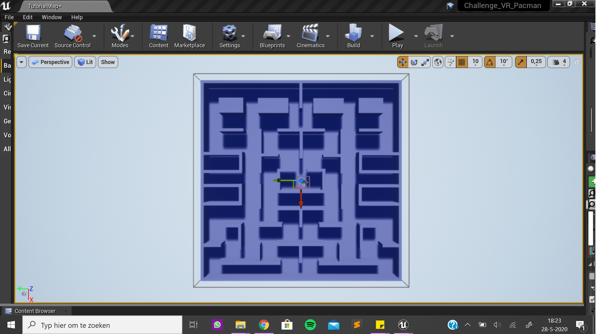

Tijdens de research naar bestaande AR&VR games en ruimtes en dergelijke, besloot ik al snel dat ik een game wil bouwen in VR. Er zijn al zo veel games in VR zoals Job Simulator, Minecraft en Beat Saber, dus is het mogelijk om daar de basis van te gebruiken en zelf elementen aan toe te voegen en veranderen. Veel van die games zijn hebben een P.O.V. vanuit de loper/speler en dat is voor de gebruiker een leukere ervaring, omdat het echt lijkt alsof ze in de game zijn. Ik heb meerdere programma's onderzocht, maar ben eruit gekomen dat ik Unreal Engine toch het lieft gebruik, ook omdat veel van de programma's die ik vond heel erg lijken of UE en er zijn op internet veel tutorials te vinden voor dit programma.
Ik had door het onderzoeken en rondvragen bij vrienden en familie voor leuke ideeen al snel een idee dat ik het spel Pacman wilde proberen te maken in VR. Bij de eerste tinkering ben ik bezig geweest met het doolhof te maken uit de template van de BananenCollector die ik in de workshop hebben gebruikt. Daaruit heb ik meerdere muren gemaakt en de originele plattegrond van Pacman nagebouwd en de muren ook een donkerblauwe kleur gegeven. Zie hieronder het resultaat.
Voor de tweede tinkering heb ik de eigenschappen van de bananen en de player van diezelfde workshop gebruikt om de gele Pacman en de witte bollen te maken. De bollen worden geabsorbeerd door de Pacman als ze overlappen. Zie hieronder het resultaat.
Voor de derde tinkering ben ik uit gaan zoeken hoe ik andere characters (in het Pacman spel zijn het spookjes) kan toevoegen die random door het speelbord heen lopen. Door tutorials te volgen ben ik eruit gekomen, hieronder is het resultaat te zien.
Voor de challenge heb ik alle tinkering onderdelen gecombineerd om het spel bijna volledig te maken. Het is nu nog niet gelukt om de speler (Pacman) te laten draaien als hij de bocht om gaat, er zijn nog geen levels en de muren zijn nog niet doorzichtig zoals ik eerst in gedachten had. Maar hieronder is het resultaat te zien en ik ben er best blij mee tot nu toe.
Ik vond het lastig om met VR te werken, omdat de codering anders is dan html en css waardoor het een hele tijd duurde voordat ik het een beetje doorhad en ik heb het nog steeds niet onder de knie. Het ontwerpen en maken van het speelterrein vond ik wel leuk, omdat dat best voor zichzelf spreekt. Ik had heel veel tutorials opgezocht, maar heb nog niet alles gevonden wat ik wilde bouwen. Als ik misschien op betere zoektermen had gezocht dan had ik mogelijk wel antwoorden kunnen vinden en mijn ontwerp compleet te maken. Ik denk dat ik nog wel verder ga proberen met Unreal Engine om andere games en gameonderdelen te maken, zodat ik later misschien wel een echt spel kan maken in VR.